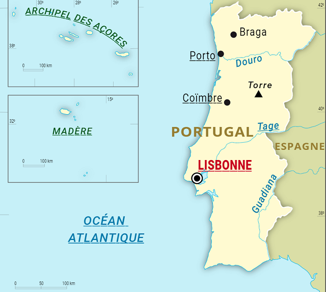

Géographie
Lisbonne est la capitale la plus occidentale d'Europe continentale. Elle est située entre l'océan Atlantique à l'ouest et la mer de Paille à l'est (communiquant entre eux par un détroit) dans laquelle se jette le Tage10. La ville occupe un territoire de 84,7 km2. Elle est située à 177 km au sud-sud-ouest de Coimbra, à 189 km au nord-nord-ouest de Faro, à 274 km au sud de Porto et à 502 km à l'ouest-sud-ouest de Madrid, la capitale espagnole.
DLes limites de la commune, contrairement à ce qui se produit généralement dans les grandes villes, correspondent au périmètre de la ville ancienne. Ceci a entraîné la création de plusieurs communes autour de Lisbonne, comme Loures, Odivelas, Amadora et Oeiras, qui font partie de son agglomération.
Le centre historique de la ville est composé de sept collines (São Jorge, Estrela, Santa Catarina, São Pedro de Alcantra, Graça, Senhora do Monte et Penha de França) dont certaines sont dotées de rues trop pentues pour permettre la circulation automobile. En conséquence de ce relief accidenté, la ville compte un célèbre ascenseur, inauguré en 190211, ainsi que trois funiculaires.
La partie occidentale de la ville est occupée par le parc forestier de Monsanto, un des parcs urbains les plus grands d’Europe avec une surface approchant les 10 km2.
Lisbonne est située sur la rive droite de l'estuaire du Tage. Deux ponts relient la ville à la rive sud : le pont du 25 avril (anciennement pont Salazar) et le pont Vasco-de-Gama.
Au cours des siècles, l’estuaire s'est rétréci progressivement, libérant des terrains qui ont été urbanisés.
La municipalité de Lisbonne est divisée en 53 freguesias (arrondissements disposant d'un conseil élu), qui composent quatre quartiers fiscaux. Chaque freguesia est gouvernée par une Junta de freguesia, un exécutif élu par les membres de l'Assemblée de la freguesia, elle-même élue directement par les citoyens recensés sur son territoire[réf. souhaitée].
Une 54e freguesia, nommée Freguesia do Oriente, devrait être créée à l'emplacement du Parque das Nações12. Au-delà des divisions administratives, Lisbonne est également divisée en quartiers historiques aux limites imprécises tels que Amoreiras, Bairro Alto, Bica, Alfama, Mouraria, Avenidas Novas, Intendente, Chelas ou Lapa, noms qui sont cependant couramment employés par les Lisboètes ainsi que dans le tourisme.
En fin d'année 2010, la municipalité de Lisbonne propose de fusionner plusieurs freguesias de Lisbonne pour réduire le nombre à 27 arrondissements, avec la réorganisation des centres historiques13,14.
La ville de Lisbonne bénéficie d'un climat méditerranéen. Les étés sont chauds sans chaleur excessive grâce à l'influence océanique de l'océan Atlantique. Les précipitations atteignent en moyenne 6,1 mm en juillet et 6,8 mm en août15 ; l’ensoleillement à cette période est très fort. Les hivers sont doux et humides, la température moyenne en cette saison est de 16,7 °C, et passe rarement en dessous des 5 °C. L'ensoleillement dure de 2 900 à 3 300 heures en moyenne par an16.
Si les précipitations annuelles atteignent environ 800 mm par an, on ne compte qu'une centaine de jours de pluie par an, pour la plupart entre octobre et avril16. Proche de l'océan Atlantique, il était dit que le climat de Lisbonne était le meilleur et le plus tempéré de toute la péninsule Ibérique, avec peu de jours d'intense chaleur et peu de jours de gel17.